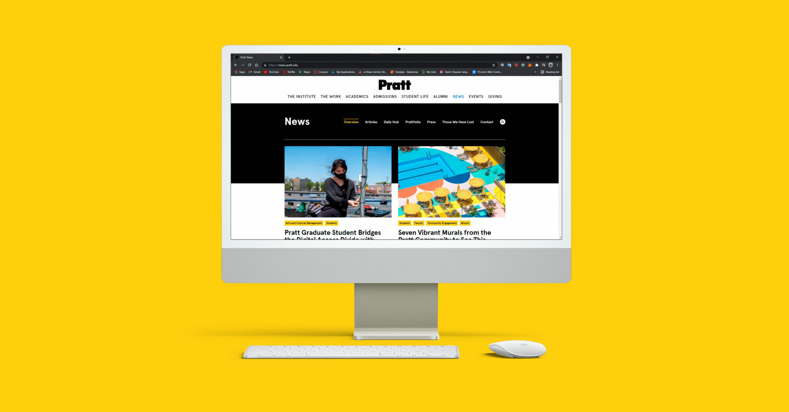
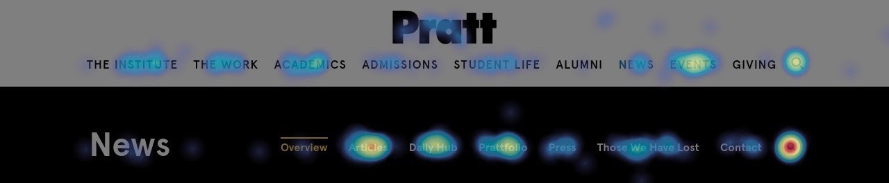
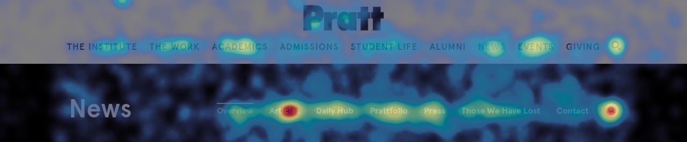
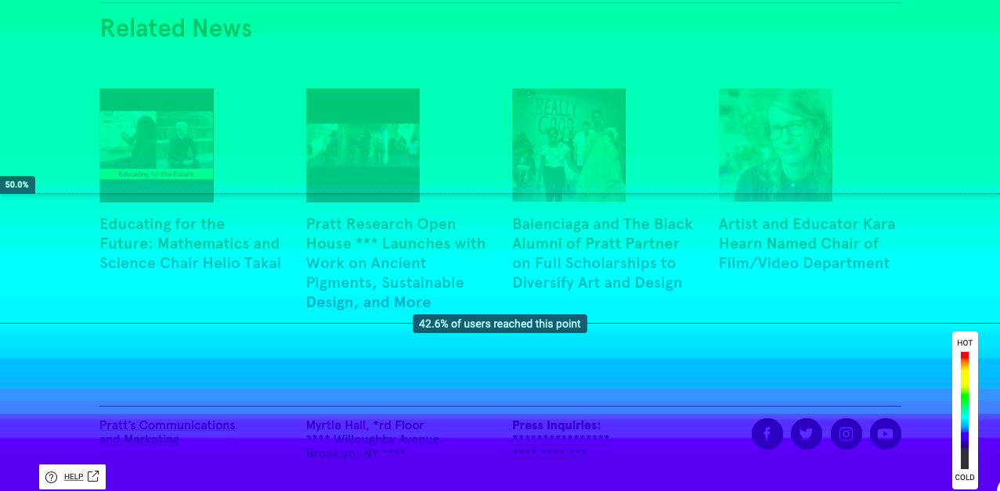
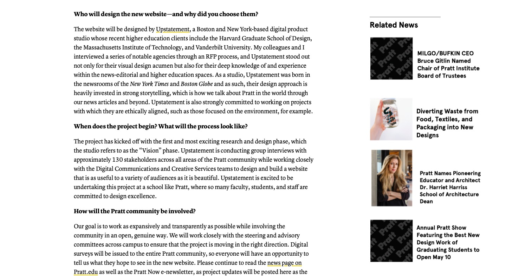

A week-long behavioural analytics study of Pratt Institute's newly redesigned news website — combining Google Analytics, Hotjar heatmaps, and scroll maps to diagnose a 94% drop-off rate and surface four targeted design recommendations.
Pratt Institute had recently relaunched its news website. Despite the redesign investment, early signals suggested users weren't engaging with the content — navigation felt unclear, and editorial content wasn't being discovered.
This study applied behavioural analytics to understand what users were actually doing on the site, not what they said they would do. The goal was to provide the Pratt communications team with specific, actionable recommendations grounded in observed behaviour rather than opinions.

Pratt News website · Newly redesigned · Desktop view (64% of total traffic)
The study ran for one week (Sept 24–30) using Google Analytics for traffic and behaviour data, and Hotjar for heatmaps, scroll maps, and movement maps. The focus was desktop — accounting for 64% of all site visitors — though mobile findings were documented for follow-up.

Hotjar heatmap · Navigation area · 43% of all page clicks occur above the fold on nav elements
The data told a consistent story: users arrived with intent and left without finding what they came for. Four specific patterns emerged across the week's data.
"Your findings also show us that the labels we chose for the navigation options are really working well."
— Pratt Communications Team, post-presentation feedback
Mouse movement map · Homepage · Users track navigation heavily but struggle to exit into article content

Scroll map · Article page · 53% of users never reach the related articles section at page bottom
Each recommendation mapped directly to a specific observed behaviour — no speculation, no "best practice" generalisations.

Recommendation · Related articles · Sticky sidebar keeps discovery pathway visible throughout reading
"Thank you so much for these design recommendations. They look really thorough and professional."
— Pratt Communications TeamThe client validated both the findings and the direction, noting that the navigation label analysis confirmed choices they had made intuitively. A follow-up mobile mockup was delivered addressing a secondary set of mobile-specific patterns identified in the data.